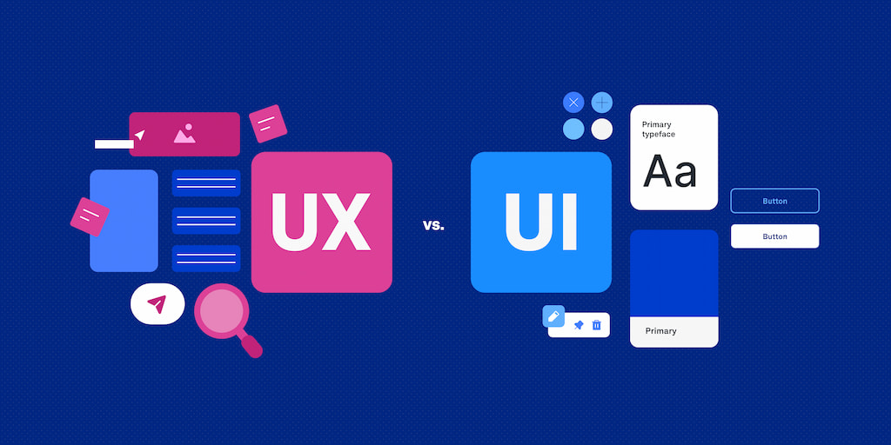

Fabrizio Caballero
About Me
My name is Fabrizio Caballero, I am a UI/UX designer with focus on both mobile and web design. I have 4 years of experience in the industry and specialize in refining the onboarding process for SaaS businesses.
UX/UI Resources
Here are some useful UI/UX Resources: